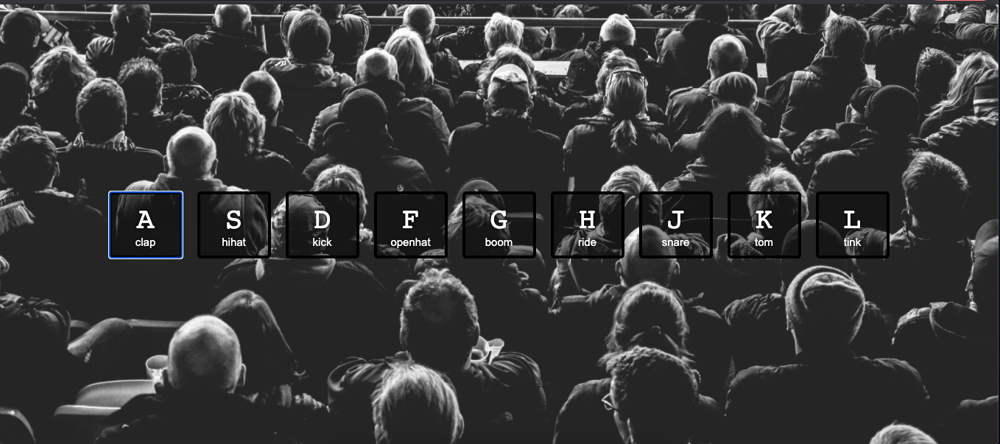

A clock that gives the current time made with CSS and JS.

Updating CSS style declarations using CSS variables and JS - in this case toggling grayscale over an image.

Logging an array of text content from a web page to the console and using array methods to manipulate the data.

A keyboard drum kit that runs in the browser using JS and CSS.

An image gallery layout build using CSS grid and CSS style primitives.